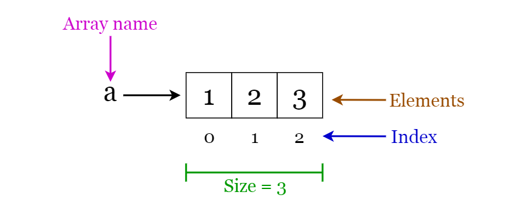
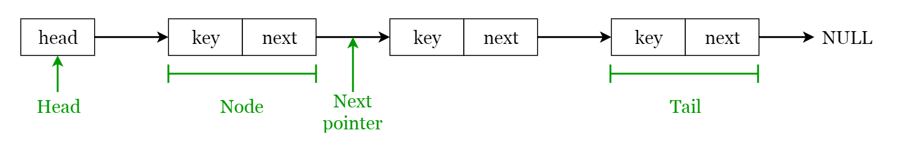

8 kiểu cấu trúc dữ liệu mà mọi lập trình viên cần phải biết
Trong lĩnh vực Khoa học máy tính, cấu trúc dữ liệu được định nghĩa là những cách để tổ chức và lưu trữ dữ liệu trong máy tính để chúng ta có thể thực hiện các hoạt động trên dữ liệu được lưu trữ đó một cách hiệu quả hơn. Cấu trúc dữ liệu có một phạm vi sử dụng rộng rãi trên các lĩnh vực khác nhau của ngành Khoa học máy tính lẫn Kỹ thuật Phần mềm.
Các cấu trúc dữ liệu được sử dụng trong hầu hết mọi chương trình hay phần mềm đã được phát triển. Hơn nữa, các cấu trúc dữ liệu đều tuân theo các nguyên tắc cơ bản của Khoa học máy tính và Kỹ thuật Phần mềm. Nó cũng là một chủ để quan trọng trong các câu hỏi phỏng vấn ở ngành Kỹ thuật phẩn mềm. Do đó, là một lập trình viên, chúng ta cần phải có kiến thức tốt về các cấu trúc dữ liệu. Trong bài viết này, mình sẽ giải thích ngắn gọn về 8 cấu trúc dữ liệu thường gặp mà theo mình nghĩ là mọi lập trình viên cần phải biết về chúng.
1. Array
Một Array - mảng là một cấu trúc với kích thước cố định, có thể giữ các item có dùng kiểu dữ liệu. Nó có thể là một mảng các số nguyên, một mảng các số thực, một mảng string hay kể cả một mảng của các mảng (mảng 2 chiều). Mảng được đánh chỉ mục, cho phép ta có thể truy cập ngẫu nhiên vào mảng.
Các phép toán trên mảng
- Truy cập ngẫu nhiên: Cho phép ta truy cập tới một phần tử bất kỳ trong mảng bằng chỉ mục (index) của nó.
- Tìm kiếm: Tìm kiếm một phần tử trong mảng bằng chỉ mục hoặc giá trị của nó.
- Cập nhật: Cập nhật giá trị của một phần tử đã tồn tại trong mảng thông qua chỉ mục của nó. Việc chèn thêm phần tử hay xoá bớt phần tử trên mảng là không thể thực hiện thẳng bởi mảng có kích thước cố định. Nếu muốn thêm một phần tử vào mảng, đầu tiên ta phải tạo một mảng mới với kích thước được tăng lên so với mảng cũ, sau đó copy các phần từ và thêm phần tử mới vào mảng mới. Tương tự với việc xoá phần tự, ta cần một mảng mới với kích thước nhỏ hơn.
Ứng dụng của mảng
- Sử dụng để xây dựng nên các cấu trúc dữ liệu khác như là array list, heap, hash table, vector hay matrix.
- Sử dụng cho các thuật toán sắp xếp khác nhau như là insertion sort, quick sort, buble sort, merge sort.
2. Linked List
Một Linked list là một cấu trúc tuần tự bao gồm một chuỗi các item theo thứ tự tuyến tính được liên kết với nhau. Do đó, ta chỉ có thể truy cập tuần tự vào linked list, không thể thực hiện truy cập ngẫu nhiên. Linked list là cung cấp cho chúng ta một cấu trúc dữ liệu đơn giản và linh hoạt cho các tập hơn động. Hãy cùng xem xét các quy tắc của một linked list. Để hiểu rõ hơn về ý tưởng của linked list, bạn có thể xem thêm hình dưới:
- Các phần tử trong linked list được gọi là các node.
- Mỗi node sẽ chứa một key và một con trỏ trỏ tới node kế tiếp của nó, được gọi là next.
- Thuộc tính tên là head trỏ tới phần tử đầu tiên của linked list.
- Phần tử cuối cùng của linked list có tên là tail.
Một số loại linked list có thể kể tới bao gồm:
- Singly linked list: Duyệt qua các phẩn tử chỉ có thể thực hiện theo chiều hướng về phía trước.
- Doubly linked list: Duyệt qua các phẩn tử có thể thực hiện theo cả chiều tiến và lùi. Các node sẽ bao gồm thêm một con trỏ được gọi là pre, trỏ tới node trước đó.
- Circular linked list: Là một doubly linked list đặc biệt, khi mà con trỏ prev của head trỏ tới tail và con trỏ next của tail trỏ tới head.
Các phép toán trên linked list
- Tìm kiếm: Tìm phần tử đầu tiên với key là k trong một linked list được cho trước được thực hiện đơn giản bằng một quá trình duyệt tuần tự và trả về con trỏ trỏ tới phần tử đó.
- Thêm: Để thêm một key vào một linked list có sẵn, ta có thể thực hiện theo 3 cách: thêm vào đầu list, thêm vào giữa list hoặc thêm vào cuối của list.
- Xoá: Xoá một phần tử x khỏi một linked list cho trước. Ta không thể xoá một node với chỉ một bước. Việc xoá một node có thể thực hiện theo 3 cách: xoá từ đầu danh sách, xoá từ giữa danh sách hoặc xoá từ cuối danh sách.
Ứng dụng của linked list
- Được dùng cho symbol table management trong thiết kế compiler.
- Được sử dụng trong việc chuyển giữa các chương trình bằng phím tắt Alt + Tab (cài đặt bằng Circular Linked List).
3. Stack
Stack - ngăn xếp là một cấu trúc dạng LIFO (Last In First Out - phần tử được đưa vào sau cùng sẽ có thể được truy cập đầu tiên) được thấy thường xuyên trong rất nhiều ngôn ngữ lập trình. Cấu trúc này được đặt tên là "stack" bởi vì nó giống với hình ảnh một "stack" trong thực tế - một "stack" bát đĩa.
Hoạt động của stack
Có 2 hoạt động cơ bản có thể được thực hiện trên một stack, mô tả ở hình phía dưới đây:
- Push: Thêm một phần tử vào đỉnh của stack
- Pop: Xoá một phần tử khỏi top của stack
Ngoài ra, còn có một số hàm khác được bổ sung vào stack để kiểm tra trạng thái của nó, gồm có:
- Peek: Trả về phần tử ở đỉnh của stack mà không xoá nó đi
- isEmpty: Kiểm tra một stack có rỗng không
- isFull: Kiểm tra một stack có đang đầy không
Ứng dụng của stack
- Sử dụng cho tính toán giá trị biểu thức
- Sử dụng cho cài đặt lời gọi hàm trong lập trình đệ quy
4. Queue
Queue - hàng đợi là một cấu trúc dạng FIFO (First In First Out - phần tử được đặt ở đầu sẽ có thể được truy cập đầu tiên) được thấy thường xuyên trong rất nhiều ngôn ngữ lập trình. Cấu trúc dữ liệu này được đặt tên là "queue" bởi nó giống với hình ảnh một hàng đợi trong thực tế - một hàng người xếp hàng đợi.
Hoạt động của queue
Có 2 hoạt động cơ bản có thể được thực hiện trên một queue, mô tả ở hình phía dưới đây:
- Enqueue: Thêm một phần tử vào phía cuối queue
- Dequeue: Xoá một phần tử ở phía đầu queue
Ứng dụng của queue
- Được sử dụng để quản lý thread trong multithreading
- Được sử dụng để cài đặt các hệ thống hàng đợi
5. Hash table
Hash table - bảng băm là một cấu trúc dữ liệu lưu trữ các giá trị mà mỗi giá trị có một key được liên kết với nó. Hơn nữa, hash table hỗ trợ tìm kiếm hiệu quả nếu ta biết được key của giá trị cần tìm. Do đó, nó rất hiệu quả trong việc thêm, tìm kiếm dữ liệu bất kể kích thước dữ liệu như thế nào. Phương pháp đánh địa chỉ trực tiếp sử dụng ánh xạ 1 - 1 giữa key và value khi lưu trữ trong bảng. Tuy nhiên, có một vấn đề trong cách tiếp cận này là khi có một lượng lớn cặp key-value cần lưu trữ. Table sẽ trở nên rất lớn với nhiều bản ghi và sẽ gặp vấn đề khi lưu trữ. Do đó, để tránh vấn đề này, ta sẽ sử dụng hash table
Hash function
Một hàm đặc biệt có tên gọi là hash function (h) được sử dụng để giải quyết vấn đề của cách tiếp cận đánh địa chỉ trực tiếp. Với cách truy cập trực tiếp, một giá trị với key k sẽ được lưu trữ trong slot k. Sử dụng hàm băm, chúng ta sẽ tính toán index của slot mà value được lưu trữ. Giá trị được tính toán bằng hàm băm của một key được gọi là hash value, cho biết index của slot mà giá trị được ánh xạ tới.
h(k) = k % m
- h: hàm băm
- k: key của hash value cần xác định
- m size của hash table
Ứng dụng của hash tables
- Sử dụng để cài đặt việc đánh index trong database
- Sử dụng để cài đặt các mảng liên kết
- Sử dụng để cài đặt kiểu cấu trúc dữ liệu Set
6. Tree
Tree - cây là một cấu trúc dữ liệu có phân cấp, trong đó dữ liệu được tổ chức theo thứ bậc và được liên kết với nhau khi lưu trữ. Có nhiều kiểu tree đã được phát triển trong nhiều thập kỷ qua, để phù hợp với các ứng dụng khác nhau hay khắc phục những hạn chế nhất định. Một số ví dụ có thể kể tới bao gồm: cây tìm kiếm nhị phân, B-tree, treap, red-black tree, splay tree, ...
Binary Search Tree
Một binary search tree (BST) - cây tìm kiếm nhị phân, như tên nó đã gợi ý, là một cấu trúc dữ liệu lưu trữ dữ liệu theo dạng cấu trúc thứ bậc. Cấu trúc dữ liệu này lưu trữ giá trị theo thứ tự sắp xếp. Mỗi node trong một BST bao gồm các thuộc tính sau:
- key: giá trị được lưu trữ trong node
- left: con trỏ tới con bên trái
- right: con trỏ tới con bên phải
- p: con trỏ tới node cha
Hãy xét một node x trong cây tìm kiếm nhị phân:
- Nếu y là node con bên trái của x, thì y.key ≤ x.key
- Nếu y là node con bên phải của x, thì y.key ≥ x.key
Ứng dụng của tree
- Binary Trees: Sử dụng để cài đặt parse và tính toán biểu thức.
- Binary Search Tree: Được sử dụng trong rất nhiều ứng dụng tìm kiếm, nơi mà dữ liệu vào ra liên tục.
- Heaps: Được sử dụng trong JVM để lưu trữ các đối tượng.
- Treaps: Sử dụng trong mạng không dây.
7. Heap
Heap là một trường hợp đặc biệt của cây nhị phân, khi mà node cha sẽ so sánh giá trị của nó với các node con của nó để sắp xếp lại cho phù hợp. Ta hãy cũng xem xét cách biểu diễn heap. Heap có thể được biểu diễn bằng cách sử dụng tree hoặc array. Hai hình vẽ dưới dây cho ta cách biểu diễn một hear bằng cách sử dụng cây nhị phân hoặc mảng.
Có 2 kiểu heap:
- Min Heap - giá trị của node cha sẽ nhỏ hơn hoặc bằng các con của nó. Node ở root sẽ có giá trị nhỏ nhất trong heap.
- Max Heap - giá trị của node cha sẽ lớn hơn hoặc bằng các con của nó. Node ở root sẽ có giá trị lớn nhất trong heap.
Ứng dụng của heap
- Sử dụng trong thuật toán heapsort.
- Sử dụng để triển khai hàng đợi ưu tiên.
- Các queue function có thể được cài đặt bằng cách sử dụng heap với độ phức tạp là O(log n).
- Sử dụng để tìm giá trị lớn (nhỏ) thứ k trong một mảng cho trước.
8. Graph
Một graph - đồ thị là một tập hợp hữu hạn các đỉnh (nút) và đường đi giữa các đỉnh này. Kích thước của một đồ thị được tính bằng số lượng, bậc của đồ thị được tính bằng số đỉnh của nó. Hai đỉnh được gọi là liền kề nếu chúng được nối với nhau bởi cùng một đường.
Đồ thị có hướng
Một đồ thị gọi là đồ thị có hướng nếu tất cả đường đi trên nó đều được đánh dấu chiều giữa điểm đầu và điểm cuối. Ký hiệu (u,v) là đường đi từ đỉnh u tới đỉnh v. Self-loop: việc một đỉnh có đường đi tới chính nó.
Đồ thị vô hướng
Một đồ thị gọi là đồ thị vô hướng nếu tất cả đường đi trên nó đều không quy định chiều. Nếu một đỉnh trong đồ thị không được kết nối tới bất kỳ đỉnh nào, ta nói nó bị cô lập.
Ứng dụng của đồ thị
- Sử dụng để biểu diễn mạng xã hội. Mỗi người dùng là một định và người dùng sẽ được kết nối với nhau bởi các cạnh.
- Sử dụng để biểu diễ các trang web và link trong các công cụ tìm kiếm. Trang web trên mạng internet sẽ được liên kết tới các trang khác qua các đường link. Mỗi trang web là một đỉnh và các link sẽ là các cạnh.
- Sử dụng để biểu diễn vị trí và đường đi trong GPS. Vị tí là các đỉnh và đường đi giữa các vị trí chính là các cạnh. Được sử dụng để tính toán đường đi ngắn nhất giữa 2 địa điểm.
Tổng kết
Trên đây là 8 kiểu cấu trúc dữ liệu cơ bản mà mỗi lập trình viên cần và nên biết.
Nguồn: 8 kiểu cấu trúc dữ liệu mà mọi lập trình viên cần phải biết